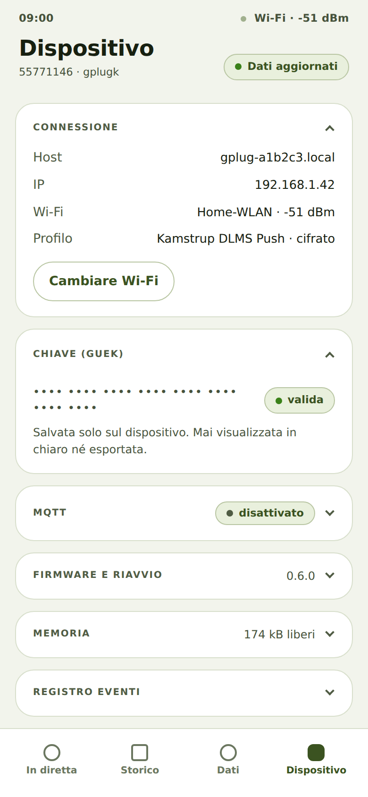

Consultare l'indirizzo e la connessione del gPlug
Di cosa si tratta
Come proprietario di un gPlug voglio sapere a quale indirizzo è raggiungibile e quanto è buona la sua ricezione Wi-Fi, per ritrovarlo e scegliergli una buona posizione.
Come fare
- Toccate Dispositivo in basso. La scheda Connessione è aperta.
- Mostra Host (l'indirizzo con
.local), IP, il Wi-Fi con l'intensità del segnale e il Profilo scelto.
Scheda Dispositivo con connessione e chiave
Come capire che ha funzionato
- L'indirizzo mostrato apre l'app anche su un altro dispositivo nello stesso Wi-Fi.
Note
- L'intensità del segnale è indicata in dBm: −50 è molto buona, sotto −80 la connessione diventa inaffidabile.
- Ogni scheda della sezione Dispositivo si apre e si chiude toccandone il titolo; il browser se lo ricorda.
Verificato con il simulatore del dispositivo il 30 settembre 2026.